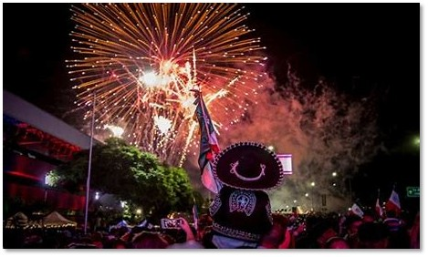

El 21 de septiembre fiesta patronal en honor a San Mateo.
El 15 de septiembre las fiestas patrias
El 1 y 2 de noviembre Todos Santos con ofrendas florales y de alimentos; Semana Santa; 12 de diciembre fiesta en honor a la Virgen de Guadalupe; 24 de diciembre y Año Nuevo. 